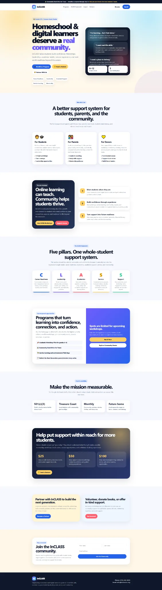
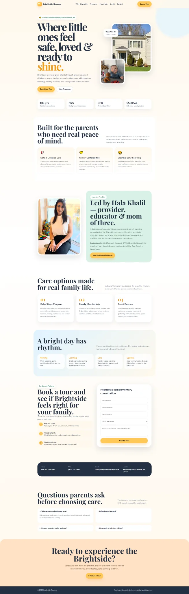
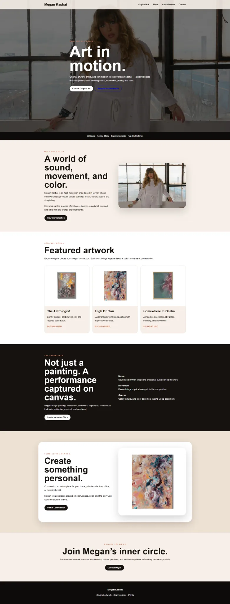

I listen before I recommend.
I want to understand what is happening between the business, its audience, and the team before adding another deliverable.
Business Development & Activation Lead
I help nonprofits, small businesses, service providers, and creators turn unclear marketing into practical systems people can understand and act on.
The real problem
People leave before they understand how good the offer really is. My job is to find where that trust is being lost and make the next step clearer.
How I work
I want to understand what is happening between the business, its audience, and the team before adding another deliverable.
Even when the right answer is smaller, slower, or different from what they first asked for.
Clients should always know what is happening, why it matters, and what comes next.
Selected work
01 · Nonprofit marketing leadership
Working as Marketing Head, helping the organisation communicate its programmes, strengthen its online presence, and keep marketing activity connected across the team.
02 · Nonprofit growth
Helping a youth-focused nonprofit improve website clarity, Google Ad Grants readiness, and the path from search visibility to meaningful action.

03 · Service business website
A warm, trust-focused digital experience designed around parent confidence, safety, care, and a clearer route to enquiries and tours.

04 · Creator support
Supporting Meta Business Suite and advertising setup, while helping the brand use its digital tools with more clarity and confidence.

What I would fix first
I would start by asking:
Client proof
Ongoing Marketing Head role · Yonkers, New York
Watch team introduction ↗ Instagram reviewMeta Business Suite & Ads assistance
Watch review ↗ Instagram reviewWebsite copy enhancement
Watch review ↗ Instagram reviewGoogle Ad Grants support · InCLASS Inc.
Watch review ↗Start here
Share what feels unclear or stuck. I will review the context personally and respond with the clearest next step I can see.
Based in Karachi · Working worldwide